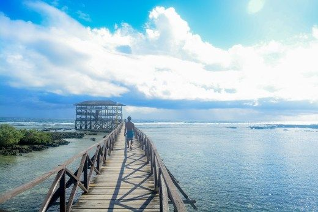
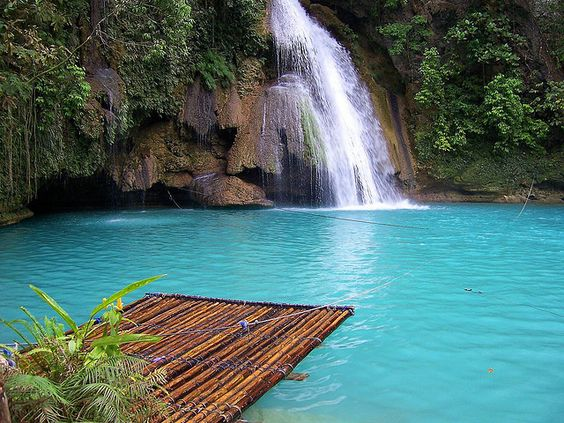
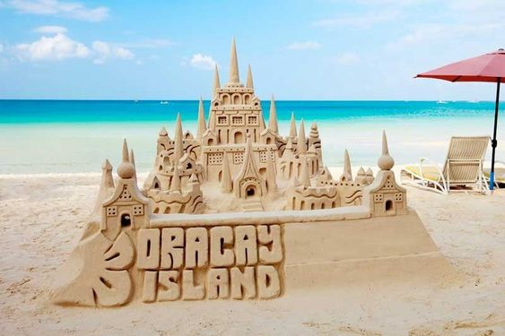

ஓ๑ photo gallery ๑ஓ
The Philippines is famous for its breathtaking tourist attractions. You can discover pleasure for your mind, body, and soul. "It's More Fun in the Philippines" is a well-known tourist slogan since every area in the country has a remarkable and distinctive feature that makes it an experience everyone can enjoy.
Let us have a look at three well-known tourist attractions.
Kawasan Falls, Cebu
- It is famous for its turquoise, pure water surrounded by steep limestone canyon walls and is located below the Mantalongon Mountain Range.

White Beach, Boracay
- It is one of the most frequently visited tourist attractions in the Visayas and the Philippines, offering an incredible view of the ocean with its glistening blue water.

Cloud 9, Siargao
- It's well-known for its surfing areas, and here's a fun fact: “Cloud 9" can also refer to a state of happiness, which can also be why you feel happy in Cloud 9, Siargao.

Sources:
To learn more about the Philippines, visit:
⇢ More about the Philippines ヽ(ᵕᴗᵕ`)ﾉ